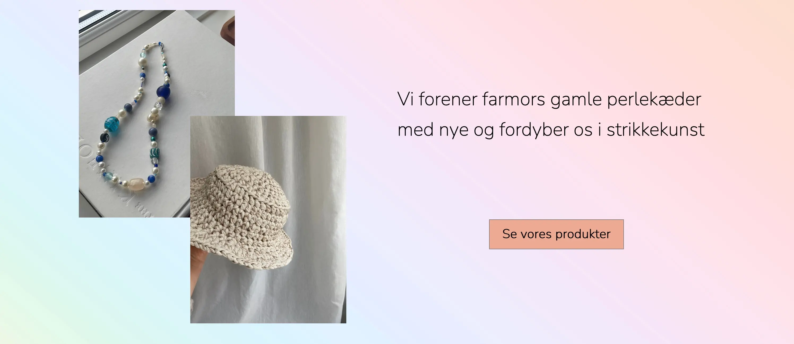

I tema 2 lærte vi blandt andet om flexbox og grid, som er måder at skabe et layout af HTML elementer i CSS. Flexbox virker kun i en dimension (en række eller kolonne), hvorimod grid virker i to dimensioner, rækker og kolonner.
På forsiden af mit emnesite valgte jeg at bruge grid til at lave et layout af to billeder, der overlapper hinanden. Dette gjorde jeg ved at lave en container med de to billeder og lave et grid med tre kolonner. Herefter gav jeg de individuelle billeder deres grid positioner, sådan at de kunne overlappe hinanden, ved at de begge spænder indover hinandens grid kolonne og grid række.
Jeg ville ikke kunne opnå det ønskede layout ved at bruge flexbox, da det kun er en-dimensionelt, og billederne derfor kun ville kunne stå ved siden af hinanden eller ovenfor hinanden.
